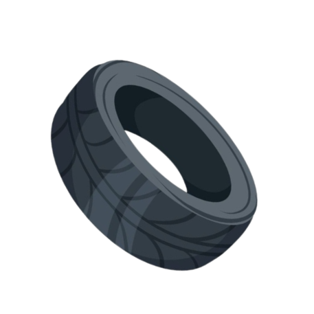
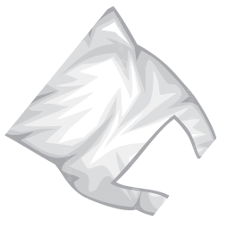
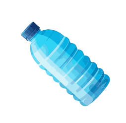
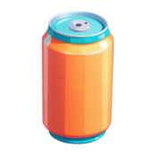

En el Delta del Llobregat, varios barcos han soltado mucha basura y el mar se ha ensuciado. Anna, con su traje de submarinista, se ha lanzado al agua para recoger toda esa basura para dejar el mar limpio y bonito otra vez. La basura va cayendo poco a poco hacia el fondo, y si no la atrapas a tiempo, ¡pierdes una vida! Al principio cae despacio, pero cada vez irá más rápido. Anna tiene 3 vidas para completar su misión ¡Necesita tu ayuda!



